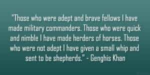

< < < Back
10 Lessons From The Life Of Genghis Khan – Return Of Kings
It is not sufficient that I succeed – everyone else must fail. – Genghis Khan
History is replete with examples of formidable leaders – but one undeniable example is that of Genghis Khan, who was equal parts military genius, political statesman, and as often stated, “ruthless tyrant.”
Scant (and often contradictory) information is available about his early life; even his appearance and death. His personality has often been contrastingly portrayed, both by the people he conquered (as a blood-thirsty invader), and the people he united to lead (who revered him as the Great Khan).
Despite being vilified throughout most of history for the brutality of his campaigns (and his supposed penchant for female war booty), some modern biographers have endeavored to present a more “realistic” account of him; even debunking most claims about the “millions” he supposedly killed, and have noted that most of these figures came from Mongol propaganda intended to scare people into submission.
Nevertheless, while his legend continues to intrigue and fascinate historians even today, he still arguably remains the founder of the largest contiguous land empire in human history.
His early life and rise to power
Born as Temujin in around 1162, from an early age he contended with the brutal nomadic life (often replete with inter-tribal warfare) on the Mongolian Steppe. At age nine, rival Tatars poisoned his father and his own tribe later expelled his family, leaving his mother to raise her seven children alone. He then grew up hunting and foraging to survive, and may have even murdered his own half-brother in a dispute over food.
Rival clans abducted both him and his young wife Borte during his teens; he later spent time as a slave before making a daring escape. Despite all these hardships, he established himself as a formidable warrior and charismatic leader by his early 20s. After amassing an army of supporters, he began forging important tribal alliances; and by 1206, he had successfully consolidated the steppe confederations under his banner and began to turn his attention to external trade and conquest.
Between 1206 and his death in 1227, he conquered nearly 12 million square miles of territory—more than any individual in history. But alongside his ruthless campaigns through Asia and Europe that left “untold millions” dead, he also modernized Mongolian culture, embraced religious freedom and helped open contact between East and West – for he is also credited with bringing the Silk Road under one cohesive political environment.
The factors of his rise
How did a struggling nomad with inauspicious beginnings in the harsh Mongolian steppes – rise to lead an irresistible force which conquered more lands and people in twenty-five years than the Romans did in four hundred?
Analyzing his life reveals a lot of exemplifications of laws from The 48 Laws Of Power, and below are some lessons to be learned from his life which contributed to his ascent to power and success:
1. Loyalty and meritocracy

After his childhood adversities made him a keen student of human nature, Genghis was adept at both spotting opportunities in disguise, and also human talent and potential.
He founded his empire on meritocracy (the exception being himself and his family) and loyalty; and he usually promoted his officers on skill and experience rather than class, ancestry, or even past allegiances.
Two prominent examples were:
-
Subutai : the son of an ordinary blacksmith, who later became Genghis’s primary military strategist and directed more than twenty campaigns in which he conquered thirty-two nations and won sixty-five pitched battles, during which he conquered or overran more territory than any other commander in history.
-
Jebe: a rival Taijut soldier who nearly killed Genghis In 1201 during battle with an arrow. However, he was later made an officer in Genghis’s army and later nicknamed “Jebe,” or “arrow” – after stirring Genghis with his brave admittance to being the shooter after his tribe’s defeat, after Genghis demanded to know who was responsible.
Both of them would go on to become the Mongols’ greatest field commanders during subsequent conquests in Asia and Europe.
2. Patriotic loyalty and tribal cohesion
Genghis’s greatest success was unifying the diverse and unruly Mongol clans under one banner, and strongly emphasized patriotism.
If my body dies, let my body die, but do not let my country die. – Genghis Khan
Having grown up enduring an environment of tribal betrayals, his love of loyalty was such that he even executed his chief rival Jamukha’s betrayers on the principle that betrayal merits the harshest punishment, as loyalty remained a core tenet in the founding of his empire.
3. His cult leader status and self-belief

Genghis’s success depended quite a bit on his fearsome reputation, and his cult leader-like following among his people (Law 27), which he successfully propagandized through his behavior, his words, and his conquests to both friends and foes alike.
4. Minimalism and moderation
The Mongols were expert horsemen archers, and the harsh life of the steppe had actually honed them physically and psychologically for the ruthlessness of war. Even when he conquered vast territories, Genghis preferred the nomad’s simple yurt over luxurious shelters and ostentation.
As a ruler, he passed strict laws against drunkenness, and his own personal example of simplicity greatly influenced his supporters to follow suit and rally round him.
5. The value of alliances
Law 2: Never put too much trust in friends, learn how to use enemies – Genghis learned this the hard way in his friendship with Jamukha, and alliance with Senggum (both who later betrayed him) before he became the sole ruler of the Mongols. After losing his father early, Genghis’ mother impressed upon him the need to forge alliances when he was weaker, and his subsequent successful implementation later further exemplifies:
- Law 18: Do not build fortresses to protect yourself – isolation is dangerous
- Law 22 :Use the surrender tactic: Transform weakness into power
6. Strategic foresight and adaptability: Have an end to a goal in mind
The merit in action lies in finishing it to the end. – Genghis Khan
Directly referring to Law 29, Genghis’s military strategies displayed strategically planned deliberate moves, a deep interest in gathering good intelligence, and understanding the motivations of his rivals, all exemplified by his extensive spy network and Yam route systems.
Simultaneously, he adopted new technologies and ideas that he encountered, such as Chinese siege warfare – exemplifying the fluidity of Law 48 : Assume formlessness.
7. Understand your people
Genghis practiced religious toleration and was interested in learning philosophical and moral lessons from other religions (Buddhism, Taoism, Islam and Christianity) – which he probably utilized in formulating his own code to govern his people, the Yassa.
His practice of meritocracy and moderation when dealing with his people eventually endeared him to his people which eventually attracted him the mass of supporters – in contrast to the harsh ways his rival chieftains followed.
8. The use of fear
As many other rulers, Genghis was not averse to using fear to control and psychologically weaken his adversaries. Even though he famously stated “violence never settles anything” – Genghis’s military strategy and use of brutality and scorched earth policy were an exemplification of:
- Law 3: Conceal your intentions
- Law 15 :Crush your enemy totally
- Law 17: Keep others in suspended terror: cultivate an air of unpredictability
- Law 37: Create compelling spectacles
- Law 42: Strike the shepherd and the sheep will scatter
This eventually built his fearsome and formidable blood-thirsty reputation (often exaggerated by supporters and foe alike).
9. Courage
Genghis’s military moves were often a direct reference to Law 28 :Enter action with boldness.
10. The apathy and unpreparedness of his adversaries
The
underestimation of Genghis’s force, arrogance of the
Khwarezmid empire, luxurious apathy and the lack of
preparedness and cohesion in his adversaries all further contributed to his success. This warns of a truth which frequently repeats itself throughout human history: the cultural degeneracy and luxuriant apathy of a civilization often presents the right environment for a brutal and ruthless one to enslave it.
Conclusion
Genghis’s life exemplifies that it doesn’t always matter where you may start in life, and what actually matters is how you endure it and where you finish at.
In spite of probably lacking formal education, his military genius and wisdom stemmed from his open mind, his practice of meritocracy, and studying human life and nature around him.
Beneath his formidable reputation, was a nomad who refused to bow down to the miseries life would relentlessly inflict upon him, but instead rose to tame them – exemplifying fortitude in his rise to greatness.
Read Next: The Wisdom Of Mao Tse Tung


{kind=link}
{kind=link}
{kind=link}
{kind=link}
{kind=link}
{kind=link}
{kind=link}
{kind=link}
{kind=link}
{kind=link}
{kind=link}
{kind=link}
{kind=link}